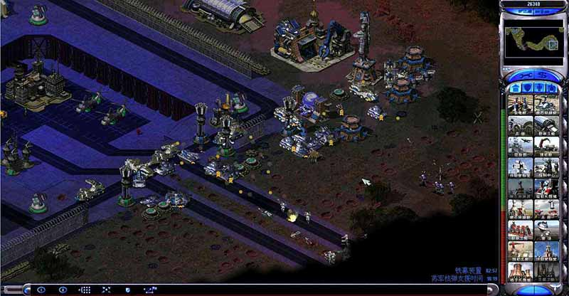

如果你看到了这个章节（内部编码为sec_test）的话，说明你没有允许JavaScript脚本。请允许本页面内的JavaScript脚本以获得最佳浏览体验。
这是《丧尸领地》的玩家手册。手册目录位于网页的左侧边栏，希望这篇文档能够帮助你解答游戏中遇到的绝大多数问题。祝游戏愉快！
制作灵感来自生化危机和孤胆枪手，此游戏赶工做出来，可能存在很多BUG，仅供QQ群成员内部测试，严禁发布在网上，最终请以作者本人发布的正式版为准。希望大家能够喜欢！
游戏下载及更新：
1.加丧尸领地粉丝QQ群825398333（QQ群文件）。
2.前往作者个人主页fhy093.ys168.com（百度网盘）。
丧尸领地使用说明目录：
这部分是有关游戏使用方法的章节。如果你是新人，请严格的按照此章节列出的步骤来使用。在游戏安装出现问题的时候，到这里来寻找答案是明智的选择。
《丧尸领地》是一款绿色游戏，安装前先关闭所有杀毒软件。解压后在游戏根目录找到Reg.exe并运行以注册游戏。然后找到丧尸领地.exe并把兼容性改为XP、设置为以管理员身份运行，然后直接运行丧尸领地.exe即可。
XP系统用户需删除ddraw.dll文件后才能正常游戏。
游戏安装教程：https://www.bilibili.com/video/av29581282
如果以上方法失败，可以利用窗口化完美解决问题，但只能窗口化游戏，方法见下文中的“游戏额外设置”。
《丧尸领地》在游戏根目录有额外的游戏设置功能，在游戏根目录里可以找到以下这些文件，双击后可以开启对应的功能。
本任务细节较多，不推荐使用调速的方式进行游戏。
进入游戏开始任务后，按“Esc”键，切换到游戏选项界面，屏幕中央的“游戏速度”选项可以调节游戏速度。默认游戏速度为4，最快可以调节为6。
各游戏速度对应的游戏帧率：
对于绝大多数用户来说游戏分辨率是可以直接在游戏选项里修改的，但是个别Win10用户可能无法在游戏选项里修改。《丧尸领地》的默认游戏分辨率是1280×720，极少数用户电脑显示器的最大分辩率可能达不到，从而导致无法正常游戏。而窗口化以后也有让窗口满屏的需求，这就需要我们手动调节游戏分辨率。所以，有必要介绍一下手动修改分辨率的方法。
找到游戏文件夹下的ra2md.ini，用记事本打开，在其中查找[Video]，可以看到以下内容：
这里的ScreenWidth=指定了宽度，ScreenHeight=指定了高度，比如上面那段代码就确定游戏分辨率为1280×720。如果是全屏运行，设为自己的屏幕分辨率刚刚好；但是在窗口化运行时，要注意，不能简单的把这个分辨率设为你的屏幕分辨率，纵向要减去窗口标题栏高度（一般为26）、任务栏高度（Windows 10一般为40）、下边框宽度（3），横向要减去窗口左右边框宽度（各为3）才行。比如作者的电脑屏幕最大分辨率是1920×1080的，作者需要设置的分辨率就是：
宽度：屏幕宽度1920-2×窗口边框宽度3=1914
高度：屏幕宽度1080-窗口标题栏高度26-任务栏高度40-下边框宽度3=1011
所以我应该把ScreenWidth=设为1914，ScreenHeight=设为1011。改完记得保存文件。
屏幕宽度：
屏幕高度：
计算结果：ScreenWidth=1914, ScreenHeight=1011
丧尸领地兼容设置目录：
首先确保你已经按照“使用说明”章节的指引完成了丧尸领地的安装。如果出现问题再看以下章节。
需要删除游戏根目录里的ddraw.dll文件，然后应该就可以正常游戏了。如果出现弹框报错，请将img文件夹里的“stringtable00.csf”文件复制到根目录。
《丧尸领地》已经预置ddraw.dll渲染补丁。正常情况下，Windows 10用户直接启动“丧尸领地.exe”就能开始游戏。
如果无法正常游戏或者在游戏中遇到弹框，你需要修改位于游戏根目录里的丧尸领地.exe的兼容性。在丧尸领地.exe的“兼容性”选项卡做如下设置：
点击“确定”并退出。
此时Windows 7/Windows 8/Windows 10的用户就可以正常进行游戏了。
丧尸领地任务简报目录：
01-高速灾变
地点：美国，浣熊市，76号高速公路

1993年6月，美国，浣熊市，76号高速公路。
卡洛斯(Carlos)是一名海豹特战队员。休假期间，他想去看望同在部队服役的姐姐谭雅。但卡洛斯在去往谭雅部队驻地的高速路上遇到了一些大麻烦，路途似乎并不顺利，他能找到谭雅吗？
任务目标一：寻找求救者。
任务目标二：寻找谭雅的部队驻地。
提示：卡洛斯不能阵亡。
02-矿区遇险
地点：美国，浣熊市，阿克雷山区矿洞

卡洛斯历经艰险后，还是找到了军方。卡洛斯得知他的姐姐已经离开，去执行一项重要任务了。同时军方提出希望卡洛斯找到在矿区的失踪人员，并答应在卡洛斯回来后帮助他进城。
任务目标一：帮助找到军方失踪人员。
任务目标二：把失踪人员安全带回营地。
提示：卡洛斯和军方人员不能阵亡。。
03-无敌火炮
地点：美国，浣熊市，76号高速公路

营地指挥官为了答谢卡洛斯，送给了他一辆粉碎火炮坦克，这简直是如虎添翼！指挥官让卡洛斯继续前进，找到军方在市郊的前哨站，那里离城市只有一步之遥。卡洛斯再一次上路了，在去往城市的路上，艰难险阻肯定是避免不了的。
任务目标一：寻找军方前哨站。
任务目标二：前往浣熊市。
提示：卡洛斯和粉碎火炮不能阵亡。
04-危险警报
地点：美国，纽约州，纽约市

卡洛斯去浣熊市调查感染的来源了。然而纽约真的像前哨站指挥官说的那样一片祥和吗？
1993年7月，美国，纽约州，纽约市。
纽约市区炮火连绵，枪声不断，到处都是惨叫哀嚎，全市一片混乱。纽约的一处卫星通讯基地与五角大楼联络突然中断，那里可是纽约的防御中枢！上级派谭雅进入纽约，希望谭雅尽快与基地取得联系，若能恢复卫星基地的通讯或许可以挽救纽约这座死城！
任务目标一：坚守火车站，以便迎接谭雅少校。
任务目标二：与卫星基地取得联系。
任务目标三：清除纽约市区的所有丧尸。
提示：谭雅不能殉职。
05-丧尸围城
地点：美国，华盛顿特区

1993年8月，美国，华盛顿特区
纽约市的卫星基地防御系统虽然恢复了运作，但是首都却接连告急。城市里突然出现一种可怕的生化传送装置，源源不断的丧尸从这里涌出。显然这是一场有计划的进攻。五角大楼方面紧急召回军队，集中兵力，誓死保卫首都。
任务目标一：保证五角大楼不被夷为平地。
任务目标二：若能摧毁所有传送装置，可以提前胜利。
提示：谭雅不能殉职。
06-地铁惊魂
地点：美国，浣熊市，市区

首都莫名出现的传送装置还是一个疑团，但好在首都得到了有效控制，谭雅可以暂时放松了。当谭雅听说卡洛斯只身一人去浣熊市里调查病毒时，就开始忐忑不安起来。谭雅最终决定，前往浣熊市与弟弟卡洛斯会合。
任务目标一：寻找卡洛斯。
任务目标二：离开丧尸城市。
提示：谭雅、卡洛斯和黑桃K都不能遇害。
07-丧尸之城
地点：美国，浣熊市，市区

军方听说了谭雅和卡洛斯在浣熊市的所见所闻后，决定调集军队，摧毁保护伞公司的生化实验设施。
任务目标一：摧毁所有生化实验设施。
提示：英雄单位不能遇害。
08-灭犬行动
地点：美国，阿拉斯加州，希望角

1994年11月——阿拉斯加希望角
浣熊市的生化实验设施被毁后，全国的丧尸疫情逐渐被军方有效地遏制下来。为了报复五角大楼，保护伞公司在华盛顿释放了数量更多、能力更强的丧尸。华盛顿苦苦支撑了一年后还是沦陷了，国家领导人和高级将领紧急逃亡到了阿拉斯加的军方基地，然而丧尸们似乎长了狗鼻子，零星的出现在了本不可能出现丧尸的高寒地区，如恶犬紧追不舍。谭雅怀疑这是一场阴谋...
任务目标一：建立一座雷达站。
任务目标二：摧毁阿拉斯加的生化实验基地。
提示：英雄单位、领导人和高级将领都不能遇害。
09-海底世界
地点：北冰洋，海底

在离阿拉斯加州不远的北冰洋海底，保护伞公司修建了一座大型海底生化实验基地。此处有重兵防守，并可能进行着一些闻所未闻的骇人实验。另外，我方获得情报，一处苏联海底基地被保护伞公司侵占。若能摧毁心灵信标，就可以将苏联潜海技术应用到我军当中。
任务目标一：摧毁心灵信标，以便获得苏联潜海技术。
任务目标二：消灭北洋海底的所有敌人。
10-穿越时空
地点：美国，加州，旧金山

1995年6月，美国，加州，旧金山。
病毒爆发的第二年，美国除了阿拉斯加高寒地区和一些零星岛屿，其他国土都已沦陷。在这危急关头，我方间谍获得了苏联军方的绝密史料。1985年8月，来自美国加州的旅行者在埃及旅游探险时误入了一座长期封闭的金字塔，随后失踪。一个月后他出现在了苏联乌克兰，导致了乌克兰大疫情。生化病毒的前身很可能来自于埃及古墓。病毒的数据已经在漫长岁月里销毁了，探寻真相的办法恐怕只有回到过去了。
任务目标一：摧毁心灵信标，解救时间机器旁的盟军守卫部队。
任务目标二：占领提供时间机器电力的发电厂。
任务目标三：确保时间机器正常充能。
提示：英雄单位不能遇害。
11-古墓探险
地点：埃及

1985年8月，埃及。
利用时间机器，我们回到了1985年8月的时间点，我们果断前往埃及打算调查真相，但遭到了埃及军方和神秘武装的攻击。时间紧迫，请不惜一切代价进入金字塔内部！
任务目标一：进入金字塔内部，查明真相。
12-失控实验（原“病毒天才”关卡已并入到此关）
地点：苏联，乌克兰，普里皮亚季

我们来迟一步，旅行者已经离开埃及到达了乌克兰。
1985年9月，苏联，乌克兰，普里皮亚季。
普里皮亚季的一处酒店入住了一个奇怪的旅行者。后来他死于一种具有极强的传染能力的病毒，可以破坏宿主的神经系统，致死机理较复杂。医院内部把它命名为“D病毒”（D-Virus）。病毒研究所专家霍尔教授相信他的疫苗可以对抗这种病毒。然而病毒变异得太快，实验开始失控。
“D病毒”弥漫在市内，人们拼命地想要外逃。
尽管采取了宵禁，关闭公共场所，封锁出城的公路等手段，但市政府还是失败了。一开始警察还能维持秩序，但随着政府内部秩序的瓦解，局势继续朝着失控的方向发展。尽管市政府还试图组织有秩序地撤出，但是，既然大家都是要离开的，谁还会接受比别人后走呢？
“我们收到了霍尔教授的求救信号！”，霍尔教授被困在了病毒研究所的活体实验室里。教授是唯一可能研制出病毒疫苗的重要人员，请务必配合防化部队解救教授。
乌克兰的最高苏维埃召开了最后一次会议，市长简述完现状后在会上宣布辞职，会后整个高层一哄而散，纷纷乘着深夜逃离，留下民众在市内惶惶不可终日。
任务目标一：在最佳抢救时间内把病人送到医院。
任务目标二：把病毒样本送到病毒研究所。
任务目标三：前往乌克兰政府与市长取得联系。
任务目标四：找到霍尔教授。
任务目标五：带领教授到机场乘机逃离。
13-核平世界
地点：苏联，乌克兰，普里皮亚季

1986年4月，苏联，乌克兰，普里皮亚季。
教授仍然没有找到对抗病毒的方法。政府解散，制度崩溃，政府高层和警察局长悄悄地坐上了驶向出城高速的轿车。混乱的情况并不会持续太久。
“死亡可以解决一切问题，没有人就没有问题。”
苏联军方为了控制疫情在全国爆发，准备在城市投下核弹并引爆切尔诺贝利核电站。
任务目标一：与市中心取得联系。
任务目标二：保护运输船，确保平民和部队分批从港口撤离。
14-玛雅遗迹
地点：墨西哥，图仑

军方核平切尔诺贝利后，封锁消息，对外宣称切尔诺贝利核电站四号机组发生了核泄漏事故。此后苏联一直相安无事，然而教授的去向却杳无音信。最近，我们的情报人员分析得出，研制病毒疫苗的教授很可能就在美洲。
任务目标一：寻找直升机残骸。
任务目标二：寻找教授。
15-浣熊危机
地点：美国，浣熊市，市区

很遗憾！我们没能在美洲找到教授，却反而见识到了为保护伞公司工作的神秘人拉恩。目前拉恩已经抵达浣熊市，不用想都知道他想做些什么！
任务目标一：消灭浣熊市的所有军队。
16-病毒克星
地点：美国，浣熊市，市区

浣熊市危在旦夕，谭雅和鲍里斯抱着最后一线希望前往浣熊市寻找教授。别忘了，这是启动时间机器后的另一个时空，他们能在这个时空和黑桃K、卡洛斯相遇吗？
任务目标一：进入浣熊市动物园地洞。
任务目标二：寻找霍尔教授。
17-传送风暴
地点：苏联，莫斯科

我们成功地解救了教授，教授取得了阶段成果，研制出了抗病毒疫苗，但目前无法量产，人类再一次出现了战胜疫情的转机。然而保护伞公司启动了风暴计划，开始了对美国本土外的病毒传播，其首要目标就是苏联首都莫斯科。1994年5月，保护伞通过传送装置袭击了莫斯科。但这次与华盛顿不同，美苏将联合起来，我们的盟军战士已经免疫丧尸病毒，让我们决战莫斯科吧！
任务目标：清除莫斯科的保护伞势力。
18-绝对防御
地点：美国，航天发射中心

保护伞公司的风暴计划已经破产，现在已经穷途末路。不过从教授的口中得知，他们在月球和太空还有基地用于生化实验。我们计划发射飞船乘胜追击。胜利就在眼前，我们会顺利吗？
任务目标：确保登月飞船正常发射。
Ex-飞向火星
地点：火星
保护伞公司在克林姆林宫遗留的资料里显示他们正打算逃离地球，去往月球以及火星。其中去往火星的火箭就位于莫斯科北部山区的苏联火箭发射中心，幸运的是我们收复了这里。沃尔科夫中尉将带领部队乘坐火箭去往火星一探究竟！
任务目标：消灭火星表面的所有敌人。
19-陨坑追击
地点：月球

不得不佩服保护伞的实力，他们的残余势力竟然逃到了月球。我们有一批精锐特种兵组成的登月小队已经离开地球进入太空！月球是不毛之地，如果我们没有充足补给，是不能打持久战的。不过听说月球好像有很多氦-3资源...
任务目标一：消灭月球表面的保护伞势力。
任务目标二：寻找怪物的来源。
20-太空决战
地点：外太空

保护伞公司之所以敢在地球肆无忌惮地做实验，是因为他们已经想好了退路。在太阳系外，他们建立了庞大的太空基地和部队，为防死灰复燃，务必全部消灭！
任务目标一：确保超时空传送仪正常启动。
任务目标二：消灭类地行星上的全部保护伞势力。
爆破模式 - 地下研究所
地点：未知

1993年6月初，保护伞公司某处用于生化实验的地下研究所意外泄露了病毒。上级派出一支特警小队打算一探究竟...
任务目标一：摧毁A、B、C三个区域的生化设施。
任务目标二：找到位于C区的出口。
本任务改编自穿越火线地图地下研究所。
挑战模式 - 巨人城废墟
地点：未知

巨人城曾是一座以“科技”、“工业”为傲的繁华都会。但就在一瞬间，整个巨人城淹没在了火海和灰烬之中——三小时前，破坏力惊人的巨大不明物体从天而降，将整座城市化作了一片炼狱。真相究竟如何？“巨人城空袭”的背后究竟是谁在操纵？一场世界范围内的生化大战是否已经拉开帷幕？所有的答案就在巨人城废墟中。世界联军派出GRX精英部队，进入巨人城废墟，这群战士肩负使命，要把这场空袭背后的真相带回联军总部。当然，他们首先要从生化怪物潮水般的疯狂进攻中活下来。
任务目标：消灭所有生化怪物。
孤胆枪手 - 动员兵的逆袭
地点：苏联，地下综合实验室

地下综合实验室周围出现了大量躁动的感染者，一支动员兵小队奉命调查，结果除了动员兵“吴仁权”以外，无人生还...
开局动员兵，装备全靠捡！
任务目标一：潜入地下综合实验室，查明隐藏在灾难背后的真正原因。
任务目标二：进入下综合实验室核心区域。
孤胆枪手 - 第五号试验品
地点：苏联，地下综合实验室

吴仁权来到了综合实验室地下二层，这里不仅存放着新式武器的样品，还有大量传送器不断传送着怪物...大量谜团等待去解开...
任务目标：摧毁怪物传送器并消灭全部怪物。
挑战任务 - 孤胆英雄
地点：美国，华盛顿特区
尚未开放，瑞德与布莱克前传的挑战任务。
任务目标一：前往白宫，确认杜根总统的状况。
任务目标二：前往通讯中心，呼叫支援。
任务目标三：再次前往白宫，援助杜根总统。
任务目标四：把杜根总统安全带到五角大楼附近。
挑战任务 - 冻脑行动
地点：苏联，乌拉尔山区
尚未开放，苏联本土遭遇僵尸危机的挑战任务。
任务目标：不计一切代价，保卫作战实验室。
挑战任务 - 灭顶之灾
地点：古巴，哈瓦那
尚未开放，哈瓦那遭遇飞碟攻击的挑战任务。
任务目标一：撤退，甩开飞碟母船的追击。
任务目标二：想办法击落飞碟母船。
挑战任务 - 起源覆灭
地点：墨西哥
尚未开放，阻止墨西哥毒贩和保护伞公司合作的挑战任务。
任务目标：摧毁墨西哥毒贩的地下研究所。
丧尸领地单位档案目录：
卡洛斯(Carlos)
海豹特战队员。休假期间，他想去看望同在部队服役的姐姐谭雅。但卡洛斯在去往谭雅部队驻地的高速路上遇到了一些大麻烦，驻地所在的城市里布满了生化怪物。险象环生之中，他终于找到了姐姐，与谭雅并肩作战抵抗丧尸，并一直寻找生化灾变的原因。
幸存者(Old man)
生化灾变后，卡洛斯遇到的第一个活人，他的加特林吉普车给玩家带来了很深的印象。在找到军方之前，曾给了卡洛斯很多帮助。后来与卡洛斯在断桥分别，随后他的去向成了谜团，或许是作者故意设定的。
驻地指挥官
赏罚分明的指挥官，在卡洛斯完成指挥官交代的营救被困小队任务后，指挥官送给了卡洛斯一辆前往浣熊市的粉碎火炮坦克。
前哨站指挥官
为了防止丧尸的蔓延，进入浣熊市的一座必经桥梁被毁了。哨站指挥官为卡洛斯提供了一名维修桥梁的工程师，还告诉了谭雅的去向，但这份情报显然有误，直接导致了卡洛斯被困浣熊市。
谭雅(Tanya)
卡洛斯的姐姐，少校军衔，美军王牌特工。生化灾变前，谭雅突然接到了来自五角大楼的命令，离开了驻地去执行一项特殊任务，与休假找谭雅的弟弟擦肩而过。谭雅的能力突出，重情重义。出色地完成了灾变后联系纽约卫星基地、保卫五角大楼的险急任务，为了救弟弟她不惜孤身一人闯入浣熊市。浣熊市的丧尸曾在姐弟的努力下一度得到控制，然而好景不长，美国终究进入了末世...
布莱克将军(General Black)
浣熊市最高指挥官。由于病毒的爆发，布莱克被迫在地铁站建立控制中心，并指挥浣熊市的军队。在他的帮助下谭雅成功地找到了卡洛斯。
黑桃K(Spade K)
战斗力爆表。谭雅解救卡洛斯的时候，意外地在地铁站附近的牛肉汉堡店遇到了一个怪人。他自称是卡洛斯的朋友，身边携带了五只猴子，他的真实身份一直是个迷。
保护伞公司(Umbrella Company)
著名跨国公司，公司总部位于浣熊市。保护伞公司一直在秘密研发生化武器，曾一度得到过军方和恐怖势力的支持。但随着实验的失控，一场生化浩劫将注定不可避免的发生。
鲍里斯(Boris)
苏联驻埃及陆军指挥官，他能坐上这个位置完全是因为他的个人能力，曾经屡立战功，被士兵亲切地称为“老鲍”。这样一个兵王却中了保护伞的奸计，成了保护伞公司的傀儡守护金字塔。后来幸好得到了谭雅的解救，谭雅与鲍里斯一直配合默契，成功地解决了苏联的生化病毒的爆发。关于两人的感情问题在军中一直有着各种议论，但两人至今也没有在公众场合宣布恋情。
教授霍尔(Dr. Hall)
苏联病毒学博士，祖籍美国马萨诸塞州，没有人知道他的父辈为什么选择加入苏联国籍定居乌克兰，但可以肯定的是他有着高尚的医德。教授了解各种DNA/RNA病毒的属性，因根治冠状病毒曾获得过诺贝尔生理学或医学奖。普里皮亚季发生D病毒疫情后，一直致力于D病毒疫苗的研究，大量一手实验数据都掌握在他手里，军方和保护伞公司都想得到这样的病毒天才。
拉恩（Rahn）
拉恩是保护伞公司的实际控制人，拥有着统治世界的野心。他持有能把人类变异为丧尸的轨道狙击枪，非常危险。保护伞公司最新研制成果“D-T病毒”可以使拉恩变化成任何人形，并获得了瞬间移动的能力。
感染者
最普通的感染者，以数量取胜。
生命值：300
移动速度：中
持枪感染者
持有武器的感染者，生前拥有持枪证，虽然失去了心智，但还保留着开枪的生前记忆。
生命值：300
移动速度：中
爬行感染者
这种缺胳膊少腿的感染者生前一定被其他感染者咬下去不少肉。
生命值：250
移动速度：慢
士兵感染者
生前曾经是军人，死后作战能力依然没有减退。
生命值：300
移动速度：中
矿工感染者
生前是阿克雷山区矿洞的挖矿工人，可惜他们现在已经对黄金失去了兴趣。
生命值：300
移动速度：中
迅捷感染者
不知是什么原因导致了他们的狂躁，这也使得它们可以更快的冲向敌人。
生命值：375
移动速度：快
浮肿感染者
这些体型较胖的感染者可不是因为生前吃多了，他们的身体充满了丧尸病毒的培养液。一旦这个躯壳破裂，里面的病毒就会喷涌而出，吞噬周围的人。
生命值：200
移动速度：中
特点：会自爆，造成大量伤害。自爆时还会引起周围的正常人变异为丧尸。
高度危险，不要让他们接近，请使用远程武器优先解决。
鲜活感染者
刚刚尸变的感染者，人类被挠就会变成这种无脑生物，很脆弱。
生命值：125
移动速度：中
丧尸犬
它们简直是人类的噩梦，移动速度极快，伤害极高。
生命值：150
移动速度：快
母体丧尸
这种丧尸是所有感染者的母体，有强大的生命力。在浣熊市，有人曾经看到过中了几十枪的丧尸还在四处疯狂的寻找活人，而芝加哥的那次大规模使用凝固汽油弹的战斗中，身上熊熊火焰燃烧但是仍然能够蹒跚向人类防线逼近的它们简直就是死亡的象征。难道这是传说中的不死之身？
生命值：1000
移动速度：慢
复仇者丧尸
丧尸危机中格斗专家总结出的和丧尸近身格斗的要领中，砍头是排在第一位的。可是面对一种本来就没有头的丧尸，我们该怎么砍头？
生命值：500
移动速度：快
特点：攻击力很高，能对建筑和坦克造成有效伤害。不会成群出现。
很危险，对于装甲部队，请优先对付它。
巨型丧尸
拥有铜墙铁壁一般的皮肤和强大的破坏力、令人恐惧的巨大怪物。这已经不能用自然的病毒来解释了，一定是有人刻意创造了它们。
生命值：550
移动速度：中
特点：反步兵武器无法对它造成有效伤害，需要使用反坦克武器来对付。
海豹突击队和狙击手对这种丧尸束手无策，辐射工兵的污染也无法对它造成有效伤害。相反，天启坦克几炮就能把它轰飞。
飞龙
变异出尾翼的丧尸单位，可以飞行，往往集结成群。
生命值：125
移动速度：快
海底幽魂
这只是人类出于对她们的恐惧而如此称呼的，事实上他们的生物学名称是深海丧尸，她们天生会游泳！
生命值：300
移动速度：中
坦克丧尸
你可能会联想到求生之路的Tank，事实上它们只是比巨型丧尸更强壮而已。
生命值：600
移动速度：中
特点：反步兵武器无法对它造成有效伤害，需要使用反坦克武器来对付。
海豹突击队和狙击手对这种丧尸束手无策，辐射工兵的污染也无法对它造成有效伤害。相反，天启坦克几炮就能把它轰飞。
寄生虫
好像是美国电影里的玩意儿？嘤嘤嘤~
生命值：200
移动速度：慢
巨型蚂蚁
感染了病毒的蚂蚁在美洲这种特殊环境下变得异常巨大。
生命值：300
移动速度：快
生化战士
严格来说他们并不是丧尸，他们是武装到牙齿的人类。他们为拉恩卖命，他们用自己的便携式轨道枪传播丧尸病毒，他们破坏，他们毁灭一切，他们是生化战士。
生命值：125
移动速度：中
射程：5
特点：在丧尸阵营中能够进行远程攻击，这已经需要足够重视了。
当你集中火力对付他们的时候，他们很脆弱，但是千万不要只专注于打近在眼前的丧尸而忽视了他们。
镭射车
丧尸危机爆发初期，人们对于丧尸的攻击手足无措，武器装备很快在突袭中损失殆尽。美国政府不得不征用一些民用越野车装上镭射武器来专门对付丧尸。征用的标准很低：能装上镭射炮，能跑，就合格。这样就生产出了这种速度飞快、被击中就顷刻爆炸的小车。虽然在军团作战中这简直就是开玩笑，但是在对丧尸的作战中，这种简陋的突击车还是创造了很多奇迹。
攻击力：35
射程：5
攻击速度：中等
特点：数值上，镭射车的输出伤害能力等同于一个部署的美国大兵，但是它能够快速移动而且移动中攻击。主要用于对丧尸的风筝战术。要注意镭射车很不耐打，尽量避免和敌人硬碰硬，打不过就跑才是它的逻辑。
粉碎火炮
美国人从没想过，这种古董武器居然还能够有机会被再次拉上战场。作为早期自行火炮的代表，这种榴弹炮除了射程远几乎没有什么突出特点——但是在丧尸压到家门口的时候，这种低科技的武器体现出了很大的战术价值。
攻击力：75
射程：11
攻击速度：慢
特点：粉碎火炮和光棱坦克相比稍微强韧些，但是它的弹道容易受到地形或者围墙的阻碍，转向瞄准也慢半拍，可以说是各有优劣。低科技下不失为远程攻击的一种选择。
军用推土机
路过的工程车辆，除了可以用来拆毁各种建筑，还可以碾压丧尸。
攻击力：很高（几乎秒杀）
射程：近身/碾压
特点：专业暴力拆迁……
闪电链坦克
这是沃尔科夫对苏军磁暴武器做的革命性改进，经过他改装的磁暴武器，电弧可以形成更多分裂，从而造成大面积破坏。
攻击力：120
射程：5
攻击速度：慢
特点：电流在目标之间传递，传递越远威力越大。适合近距离和丧尸缠斗。在树林中战斗时，由于电流大多击中树木，因此威力受限。
喀秋莎
这种二战中名声大噪的火箭炮在丧尸危机中被重新拉出来使用。作为一种大范围杀伤性武器，它往往能够在丧尸群中形成一片火海。
攻击力：45x8
射程：12
攻击速度：快（刚开始）/慢（稳定时）
特点：装满弹药后能打出猛烈的一波攻击，弹药打光以后攻击速度为较慢的装弹速度。适合打击突然一波集中的敌人，不适合持续输出。注意喀秋莎不能攻击离自己很近的敌人，这是操作难点之一。
海撬
虽然雷鸣潜艇有着无与伦比的性能，但是其高造价和较慢的航速让保护伞的海军有点吃不消，他们需要一种简单的快速突击舰艇。于是在拉恩的研发下，就有了这一款装备1具鱼雷发射管的轻型船舰。它们往往集群行动，像蜜蜂一样对盟军形成骚扰。
攻击力：100
射程：7
攻击速度：慢
特点：快速廉价，耐用好用，强力的海上骚扰、突击单位。
卡维利号战列舰
以卡维利将军的名字命名的战列舰，虽然是上个世纪海战思想的产物，但是代表强大毁灭力量的两门大口径主炮仍然让人不寒而栗。
攻击力：150x2
射程：15
攻击速度：极慢
杀伤半径：1.1
特点：强大的海上大杀器，超远射程超高威力的重型轰炸舰。其实应该算是英雄单位了。
莫洛托夫突击车
装有莫洛托夫鸡尾酒的轻型突击车。虽然也是土法上马，但苏联人的勇敢无畏在面对丧尸时仍然能够表现的淋漓尽致。一旦命中目标，会形成燃烧区域，不分敌我的杀伤步兵。
攻击力：80
射程：6
攻击速度：较慢
杀伤半径：0.9
特点：和镭射车处于同一科技位的轻型反步兵突击单位。虽然对单体目标的效果不如镭射车，也不能移动中攻击，但是形成燃烧后能造成有效的群体伤害。用于组建防线时请勿和步兵配合，否则容易大量的烧死自己人，请把步兵放到碉堡、步兵车或者战斗要塞中。
丧尸领地通关提示目录：
01-高速灾变
这是我自创的地图，设计大胆，改变了常有的构图方式。刻画了很多细节，例如高速的护栏、瘫痪的交通、塌方的路面、局部的照明、逼真的音效等。地图更接近真实的末世场景。
任务有难度分级，不管哪种难度开头都是很容易翻车的，所以一定要多存档，多存档，多存档！重要的事情说三遍。等卡洛斯升到三级能回血之后才能舒口气，但是困难模式依然可能翻车。
操作要点：多注意文本提示！按提示要求去做。乱闯乱撞、跑得太快是会被群殴的。遇到大量丧尸打不过时，可以利用海豹的走位逐个歼灭。优先打掉持枪的感染者。获得盖特吉普以后，除了清理路障以外就尽量不要下车了。
彩蛋： 出生点往回走，走到尽头，可以拿到升级宝箱。获得炸药后，车库那里会送宝箱。简单模式下，提速和加血，中等模式下只加血。获得IFV后，幸存者家对面的铁丝网里有一个升级宝箱。军方的沦陷基地内，有宝箱可以加攻击和加防弹衣，困难模式只送防弹衣。有一片隐藏的生化污染区域位于幸存者家西边的滑坡悬崖上。
通关视频：http://www.bilibili.com/video/av28733881，请关注B站UP主fhy093，获得更多通关视频。
02-矿区遇险
这张地图再一次改变了脑洞，活生生地在红警地图里刻画出了地下矿洞，也有一些惊喜和彩蛋。
矿洞具有以下特点：矿洞昏暗的环境下，人类的视力有所减弱。矿洞内无法使用雷达信号。在矿石上行走，会减慢移速。
大家玩了第一关是不是感觉卡洛斯就是一个普通的海豹呢？卡洛斯本来就是海豹特战队出身，属性上得到略微强化，和谭雅还差了一截。不过三星能回血的卡洛斯，还是可以应付丧尸群的。
开局还有军方协助你的两个美国大兵。他们并非一无是处，单凭卡洛斯是无法面对那么多丧尸的。但要注意，只要死一个军方人员就会任务失败的，务必多存档。
这关出现了数量可观的士兵感染者和矿工感染者，他们不仅拥有和丧尸一样的血量和护甲，还各自拥有M60和铁铲子作为武器，一定要小心啊。
进驻混凝土掩体可以抵挡屁股后面的丧尸。
不要招惹矿车，因为不小心惹到那些铁疙瘩是一定会很麻烦的，所以管好你的兵。
在矿洞最里面，可以找到军方失踪人员，三个重装大兵。离开矿洞后，用重装大兵清理掉沙袋，原路返回军队营地。
彩蛋：一开始的十字路往下走，消灭少量丧尸后可以拿到提速宝箱。遇到第一个混凝土掩体后，继续往西走，灭掉几个鳄鱼后，可以发现史前巨兽——暴龙和腕龙，附赠火力宝箱。矿洞深处入口外的油井处，有钱箱子，拿到需要智慧。矿区深处有水晶矿区，可以拿到数量不少的钱箱子，小心矿车就行。钱在本关没什么卵用，只为满足玩家的金钱欲。
通关视频：http://www.bilibili.com/video/av28741598，请关注B站UP主fhy093，获得更多通关视频。
03-无敌火炮
由于上一关在矿区获得了不少财富，所以这关玩家拥有许多金钱。但是在这个末世里，金钱真的有用吗？
这关玩家得到了一辆三星的强化粉碎火炮，炮弹的溅射伤害可以远程打击成群的丧尸，而且还能当作载具（载具功能暂时关闭，正式版推出）。缺点也明显，它有射程盲区，不适合近战。这关难度不大，主要是让玩家体验粉碎火炮的用法，因为在后面防守的关卡，它将大有作为。
困难难度，需要玩家多走A，打不过就跑，步坦结合才能发挥最大威力，详见通关视频。
彩蛋：开局营地指挥官和玩家对完话后，玩家只要操作一个步骤就可以得到营地里的所有作战单位。由于会降低可玩性，暂不公布方法。地图右下角的小岛上有加火力宝箱。离开小岛回到高速后，在附近可以找到一座混凝土掩体，那里有护甲宝箱，旁边还有油罐车，方便你炸开高速护栏。
通关视频：http://www.bilibili.com/video/av28773847，请关注B站UP主fhy093，获得更多通关视频。
04 - 危险警报
本关地图原型是mo3第一幕苏联第一关，为适应本关剧情做了大量修改。
刚开始玩家操控纽约61分队坚守火车站，3个海豹守火车站还是很轻松的，后期出去探险还大量送海豹。美国大兵可以进房子打怪练级。
任务目标一是要求61分队坚守火车站，这是军令。不要以为守火车站压力小就乱跑探地图，违抗命令是可能被军法处理掉的。
收到谭雅靠近纽约市区的信息时（有文本，也有欢呼声提示），立刻把部队调回火车站旁边的停车场。因为等谭雅抵达火车站后是禁止用户输入的，这时如果火车站不安全，谭雅是会被围殴致死的。
找到卫星基地前，你会先发现纽约守军62分队，用工程师修复桥梁，进入市区北部。这时建议玩家留一部分兵力协助62分队抵挡火车站涌来的尸群，不然后期解锁全图后压力会很大的。
随后直接杀到最东侧，获得东侧基地使用权。这时玩家就可以生产造兵了。要注意工程师只给3个，无法建造。是占领电厂、医院、维修商店，还是油井，请玩家自行分配，但必须留一个修桥用来联系卫星基地。与卫星基地取得联系后，就要求玩家修复电力。你可以工程师占领电厂，也可以用扳手自己修。但最简单的办法其实没那么麻烦，只需玩家略施小计即可，老司机懂的！
获得地图全图后，就会迎接大量丧尸涌入城市，且有巨型丧尸出没，非常危险。不要指望盟友，他们基本都会挂，感觉驱逐舰全程在打酱油（滑稽~）。需要使用重装大兵或坦克的重武器来对付，灰熊就那么三辆没血的，你还要自己修。这关是玩家第一次体验到丧尸全面爆发，后面的关卡都将持续这种状态。
彩蛋：靠近自由女神像，可以获得这里的一星美国大兵。一共三个金钱宝箱：火车站南部军队帐篷后面有一个宝箱；地图左下角，一块被水包围的三角形陆地有一个宝箱；自由女神像，东北方的水里有一个宝箱，只是难拿到比较费事。地图里一共有两个拖船，只要炸掉一个就可以给谭雅或海豹升一级。
通关视频：http://www.bilibili.com/video/av28819292，请关注B站UP主fhy093，获得更多通关视频。
05 - 丧尸围城
又一张经典地图，此图改编自原版红警2苏联第一关红色黎明、盟军第三关为长官欢呼以及盟军第六关自由，使用NEWURBAN地形重新绘制，还原程度接近99%，甚至连树木都是一模一样的，最后设计填补了官方地图其他空缺的部分。
典型的防守关卡，死守吧！这关所有丧尸的脚本只有一个：进攻五角大楼并攻击一切阻挡它的人类。而你的盟友非常不靠谱，只是象征性帮你挡挡丧尸。所以这关很容易使玩家焦头烂额。
这关资源不少，但是采矿非常费劲，容易被丧尸袭扰。想要稳定地获取资源，就应该占领并保护油井，然后在油井旁边建矿场。缺钱你还可以卖掉所有爱国者、两个电厂。
五角大楼只要缺一角，就会任务失败。如果五角大楼被攻陷，那么不好意思，美国就彻底失控了，您将是千古罪人，从此世界变为丧尸领地。
本关打法多样，美国大兵进房子，也可以出粉碎火炮或者出要塞装海豹重装，飞行兵也可以辅助防御，不过感觉攻击力好弱。不要试图炸桥，此图所有桥梁都被我加固了。
摧毁了传送装置，它就无法传送丧尸了。若能摧毁所有传送装置（共4座），可以提前胜利。但是难度比较大，因为传送装置有10000血。传送装置对重型坦克伤害比较低，可以用灰熊、战斗要塞等掩护海豹的方法炸掉。
彩蛋：修复华盛顿纪念碑、林肯纪念堂、杰斐逊纪念馆、史密索尼安城堡，都是可以获得钱箱子的。任意单位打爆任意一个红色电话亭，都可以获得5000经验值。
通关视频：请关注B站UP主fhy093，获得更多通关视频。
https://www.bilibili.com/video/av29269049（简单，摧毁传送装置）
https://www.bilibili.com/video/av30740587（困难，纯防守）
https://www.bilibili.com/video/av38007997（速通攻略，2分49秒）
https://www.bilibili.com/video/av34347706（只造美国大兵）
https://www.bilibili.com/video/av35046151（只造海豹部队）
https://www.bilibili.com/video/av34484279（只造粉碎火炮）
https://www.bilibili.com/video/av35939250（只造多功能步兵车）
06 - 地铁惊魂
作者原创地图，加入了史无前例的地铁脑洞。
这关出现了浣熊市特有的母体丧尸。浣熊市是美国丧尸发源地，这些母体丧尸拥有惊人的血量，对人类威胁很大。
本关难度大于以往的单兵任务，对微操走位要求很高。
步步小心，不无脑冲就可以轻松过简单模式。而中等和困难则比较容易翻车，一定要多存档。
谭雅往右走可以发现被卡洛斯遗弃的坦克，随后进入地铁站可以见到浣熊市最高指挥官——布莱克将军。
营救幸存者黑桃K是一个支线剧情，他可以帮助玩家很好的清理普通丧尸，注意黑桃K是不能死亡的。
找到卡洛斯后，一定要尽快逃离生化基地，因为三位英雄很难抵御保护伞防御机制。
彩蛋：地铁站台最深处（地图最左边）火车旁有一个护甲宝箱。遭遇5个巨型丧尸后，来到另一个火车旁有一个加血宝箱，宝箱比较明显。
通关视频：https://www.bilibili.com/video/av30375900，请关注B站UP主fhy093，获得更多通关视频。
07-丧尸之城
这是我自创的地图，做任务的主要精力都花费在这个地图上，地面部分延续了第六关的地图。
刚开始以防守为主，这关不卡金钱，基地旁边就是矿，地图里也有很多油井，想要富足就要多造矿车和占油井。
这关有生化塔、酸液塔，都是硬骨头，射程很远，前者可以感染步兵单位，后者直接秒掉步兵且对坦克伤害也很高。当然他们也有弱点，光棱坦克和火箭飞行兵就是他们的克星。
这关还有飞龙怪，原型是星际争霸里的飞龙，属于飞行丧尸单位，玩家需要做好防空。
彩蛋：进入基地旁边的科技前哨站可以获得超时空突击队。靠近浣熊市郊区（地图西南角，第6关谭雅出生地），可以获得援军。
通关视频：https://www.bilibili.com/video/av31476356，请关注B站UP主fhy093，获得更多通关视频。
速通视频：https://www.bilibili.com/video/av37038620，07丧失之地-速通攻略19分59秒
08-灭犬行动
本关地图改编自原版红警2苏联12关北极风暴，补充了地图南部。
开局三个英雄单位分散开防守基地周围，随后小兵进战斗碉堡加强防御。
建议不要着急造雷达，先把苏联基地发展好。
防守稳固，资源充足后再造雷达。随后玩家可以获得盟军基地车协助保护领导人。注意做好防空就行，盟军基地还是比较好守的。
两边的基地都发展起来后，就开始造海军，打好登陆战。到达对岸后，不要忽视防空，然后使用光棱推掉基地就可以了，传送装置不好打，建议派个矿车前顶抗伤害。
摧毁了超时空传送仪，敌人就会停止传送丧尸。这时，玩家也离胜利不远了。摧毁保护伞的全部建筑就可以过关了。
彩蛋：苏联基地下方坠机地点有三个飞机失事后幸存的工程师和一个火力宝箱。油井和飞机场旁边都各有一个钱箱子。
通关视频：https://www.bilibili.com/video/av31722136，请关注B站UP主fhy093，获得更多通关视频。
09-海底世界
红警海底模式的初创者可能是鹰肉丸子，他制作的《颤抖的最后珊瑚》任务深深启发了我对于在红警里加入海底世界的想法。现在《丧尸领地》海底的新脑洞绝对让你眼前一亮，效果全面超越前人鹰肉丸子。
能打到第九关的玩家相信实力已经无需看攻略就能应付此关了。基本思路就是利用镭射兵在地面的射程优势，可以摧毁心灵信标周围的建筑，或者一堆遥控坦克直推心灵信标。获得苏联科技以后，无限出潜艇优先断敌人电，然后给潜艇练级，最后三星潜艇直推传送装置群。
这里着重讲讲海底世界，新规则与以往的红警规则大有不同。
海底世界如何实现的？沙漠地形的灯光被调为蓝色，声音加入了海底气泡和洋流的声音，潜艇、海豚、乌贼等被改为了空中单位，海豹改为飞行单位并只使用潜水序列帧，所有建筑单位被取消了建筑残血冒火冒烟的特效，奴隶矿场被改为海底采矿机。
新增建筑：
深海采矿机：奴隶矿场的改版，采矿者改为深海采矿员，矿车被毁后，获得的采矿员可以发射镭射光束。
追踪爱国者飞弹：盟军爱国者飞弹的改进版，可以360度无死角攻击任何单位。
新增单位：
深海突击队：是海豹部队潜水时的状态，由于海水的阻力远大于空气，即使是改进的深海MP5冲锋枪，子弹威力依然减弱不少。
深海镭射兵：穿着抗压潜水服的重甲单位，各方面属性非常均衡。
两种潜艇：飓风级攻击潜艇和雷鸣攻击潜艇，新改进的鱼雷具备了追踪功能，外壳装甲采用新型吸声材料，免疫海豚攻击。
海豚：海豚发出的超声波只能攻击地面部队，对潜艇、飞行单位无可奈何，比较鸡肋，适合探路。
咸水鳄与乌贼：很遗憾，深达4000米的深海环境下，这两种生物无法施展拳脚，不过它们的造价低廉，视野极为开阔，用于探路绝对是你的最佳选择。
海底幽魂：这只是人类出于对她们的恐惧而如此称呼的，事实上他们的生物学名称是深海丧尸，她们天生会游泳！
通关视频：https://www.bilibili.com/video/av32066425，请关注B站UP主fhy093，获得更多通关视频。
10-穿越时空
新增丧尸单位：坦克丧尸，改编自求生之路，血量和移速均优于巨型丧尸，力量与恐怖的化身。
任务目标一比较好实现，谭雅负责C4掉坦克丧尸，黑桃K负责解决楼房驻兵和盖特机炮。
难在后面的任务目标，丧尸狂潮让你措手不及。现在发布的版本已经降低了不少难度，守基地出一些粉碎火炮和海豹就差不多了，后期再出一些重装和火箭兵巩固防御。
占发电厂之前一定要先把部队拉过去，就像保护基地一样保护发电厂。尤其是电力供应充足时间机器充能后，只要电力不足，时间机器就会自毁任务失败。
时间机器充能的最后五分钟是丧尸进攻最猛烈的阶段，一定要保护好发电厂！防止缺电的办法还可以卖掉自家的一些耗电器。
彩蛋：命令任意舰船从金门大桥的断桥穿过，可以得到卡维利指挥舰支援。但必须是摧毁心灵信标后才会生效。
通关视频：https://www.bilibili.com/video/av32596465，请关注B站UP主fhy093，获得更多通关视频。
11-古墓探险
本关地图改编自《尤里的复仇》盟军第四关古墓奇袭，金字塔内部的地图是我手绘原创。
本关难度适中，解救埃及军方简直就是送分题。本关难点在于如何进入金字塔，直接攻是不可能的，谭雅和鲍里斯都无法越过围墙，但是请不要忘了我们的攻城狮！
获得鲍里斯后直接带着工程师占领东边的保护伞小基地，可以获得兵营和油井。然后再拿下东北方向的保护伞基地，一定要占领敌人的战车工厂，没有坦克你是无法攻入金字塔的。
不要想着占领埃及军方基地或者炸掉兵营，这些都是设定禁止的，但是保护伞的基地随意。
进入金字塔后所遇到的基本都是生化步兵和少量木乃伊，都是属于送人头的敌人。主要是想让玩家走走剧情，了解一下生化病毒的起源。
最后在金字塔顶部，玩家遇到保护伞公司量产木乃伊，这时立即乘坐运输船顺着通向尼罗河的地下暗河离开金字塔即可完成本关。
彩蛋：刚进入金字塔内部时，在悬崖上有个隐藏入口，上面有敌人的防御，上去需要技巧。进去后可以发现刷木乃伊的坟墓。
通关视频：https://www.bilibili.com/video/av33511386，请关注B站UP主fhy093，获得更多通关视频。
12-失控实验（原“病毒天才”关卡已并入到此关）
本关地图改编自Yugram（郁）的《苏维埃格勒》。
本关是剧情关，与市长见面前的任务目标难度都不大，绝大多数都是镜头，意在让玩家了解病毒的起源，了解这场灾变的根本原因。
简单中等模式与困难模式有差异，表现在拒马能不能炸掉，困难模式，谭雅只能走水路去乌克兰政府。
随后任务是营救教授，路上要小心成群的丧尸。
进入实验室后，听到实验室警报后要立即寻找门禁卡以便打开会议室。只有会议室的两扇门丧尸是无法通过的，找准刷丧尸的空当，然后离开。
去机场没什么难度，多走A就行了。
彩蛋：切尔诺贝利核电厂左边的水里有提速宝箱。教授旁边有护甲宝箱。实验室西南角有火力宝箱。
通关视频·上：https://www.bilibili.com/video/av35249685，请关注B站UP主fhy093，获得更多通关视频。
通关视频·下：https://www.bilibili.com/video/av35926915，请关注B站UP主fhy093，获得更多通关视频。
13-核平世界
本关地图改编自Yugram（郁）的《苏维埃格勒》。
谭雅在去往市中心的路上会遇到一个被丧尸围困的金发女警，解救之后谭雅可以得到警车，这个警车简直就是低配版战斗要塞，乘坐警车一路杀到市中心。
进入市中心就会获得全市警察的指挥权，这时，把外围的警察调到市民周围，保护市民，离港口近的市民会优先被撤离，平民被撤离后就可以转点保护其他平民了。
撤离完平民就开始撤离防暴警察和狙击特警了，同时丧尸的攻击也加强了，这将给玩家带来困难。解决办法自然是抱团在警察局。
当鲍里斯赶到后，就可以考虑放弃警察局，撤离到港口附近了。
注意！当4艘运输船赶到后，谭雅和鲍里斯是直接被电脑控制进直升机的，一定要保护他们。而其他所有人员则必须在3分钟内都放进运输船里。如果没有都撤进运输船，对此造成的后果由玩家承担。随后就是走剧情了。
彩蛋：最开始解救的那个技师可不是按摩的技师，不过他也提供“特殊服务”，他是保护伞公司派来的伪装平民（第14关可知他其实是拉恩），任务是劫持教授。
通关视频：https://www.bilibili.com/video/av38413470，请关注B站UP主fhy093，获得更多通关视频。
14-玛雅遗迹
本关地图由Yugram（郁）帮忙绘制，特别感谢！而为了适应剧情，我做了10%的地形改动。
提示：
1.一支迷路的被困小队就在地图右上角，他们当中有工程师；
2.用工程师修桥并过桥后会下小雨，然后迷雾就会散去；
3.小心病毒狙击手和寄生虫；
4.对付巨型蚂蚁的办法就是谭雅勾引，然后谭雅进水里；
5.找到印第安人后，雨就会停；
6.敌人不会攻击部落的马，所以可以探路，那些印第安人则可以用来当炮灰；
7.一共有真假两个玛雅神殿，打死假神殿旁的狂兽人会召唤盖特狂兽人打你；
8.去真神殿的必经之路上会有玛雅金字塔，极度危险，派工程师占领敌人基地，出飞碟断电，再打掉金字塔。
通关视频：https://www.bilibili.com/video/av56747599，请关注B站UP主fhy093，获得更多通关视频。
15-浣熊危机
这是我自创的地图，在第7关浣熊市地图基础上扩充了北部区域。本关是反派任务，玩家可以充分体验操纵保护伞的乐趣。同时，本关也交代了黑桃K和五个猴子的身世之谜。
这关很考验操作，难度还是比较大的。这里给些通关提示：
1.靠近浣熊市警察局，可以获得伪装成浣熊市警察的伪装部队，并可获得地图外的丧尸支援。
2.摧毁敌人的基地、兵营、和战车工厂后，敌人会卖掉所有建筑与你背水一战。好处是你不用再满世界摧毁那些没用的建筑了。缺点是如果清理太早，敌人的数量可能会让你咋舌！
3.敌人破釜沉舟的时候当心敌人的狙击车和航母。
彩蛋：摧毁浣熊市北部港口的兵营可以拿到一堆加成箱子。
通关视频：https://www.bilibili.com/video/av56747599，请关注B站UP主fhy093，获得更多通关视频。
16-病毒克星
这是我自创的地图，在浣熊市地图基础上扩充了地下实验室二层区域。
刷僵尸很爽的一关，按流程打就行了。过桥的时候要小心，别掉水里。实验室的水是受了污染的，人下去会死。实验室的激光门是无敌的，只有打掉能量装置以后才能通过。
彩蛋：实验室的三个谭雅复制人是可以解救的，不过这需要另一个彩蛋来启动，多注意鲍里斯的暗示。
通关视频：https://www.bilibili.com/video/BV18D4y1Q7tc，请关注B站UP主fhy093，获得更多通关视频。
17-传送风暴
本关地图改编自原版苏联第十一关红色革命和原版盟军第12关超时空风暴，将两张图合并为一张图，并把SNOW地形修改为NEWURBAN地形，算得上是红色革命的加强版。
本关玩家最多会面对敌人铁幕、核弹、突变、心控、传送共5个超级武器，但它们并不是同时建造的。越往后越难，可见玩家如果想使用拖延战术是肯定行不通的。以下为推荐打法：
常规打法：造核弹并做好防空，因为敌人会派6个基洛夫打你。然后用核弹摧毁克林姆林宫旁的心灵信标可以解救那里的精英守卫部队，可以帮你直接打掉铁幕、核弹和下面的心控，突变可以用基洛夫解决，美军的援军船队会在丧尸传送启动一刻钟后抵达，摧毁最北部的传送应该不是问题。解决超级武器后，剩下的就很好打了。本关做了优化，告别清理全图的烦恼：本关共有保护伞、苏联前线和苏联主力三方敌人，只要摧毁某一方敌人的建造场、兵营、车厂、超级武器后，该方敌人就会变卖全部建筑和你决一死战，清理掉所有敌人后就完成任务了。
非常规打法：造够一定数量的基洛夫和武直后，直接卖掉所有建筑，没错，就是卖掉所有建筑，敌人就基本不会再进攻了。先编号做好分工，基洛夫负责吸引火力及打掉小型传送装置，武直负责协助解决飞碟、天启及拆建筑。然后从右下角向北绕，可以解决第一个苏联基地。贴着东边炸核电东北部的核电，炸完再贴着北边炸掉西北角的核电，此时保护伞一方的敌人会断电，顺带解决丧尸传送和基地。再贴西边解决苏联的两座核电，苏联主力会断电，然后清理苏联和保护伞基地的生产建筑。此时敌人会卖掉所有建筑，剩下的就好打了，清理残敌后过关。
彩蛋：和原版苏联第十一关红色革命的彩蛋一样，就那几个箱子。
通关视频：https://www.bilibili.com/video/BV1A54y1m7vG/，请关注B站UP主fhy093，获得更多通关视频。
18-绝对防御
顾名思义，防守关卡。本关有很多特色，受地球重力影响的登月火箭员、可以移动部署的战斗碉堡、自主选择的无尽模式、首创的声光警报系统。
比较难的防守关卡，海豹、重装、装逼车、榴弹炮、要塞、光棱都是你不错的选择。刚开始不用造重装，援军送的基本就够了，后期才会出现大型丧尸，这时光棱溅射才是王道，有钱就造装逼车用海豹或狙击手练级。月球兵探图后站在高地或水面上防守，注意只能造20个。虽然地图矿产丰富，但是面对尸群矿车也只能偷摸采矿，要保护好矿车。在此感谢作者开局送你们的油井吧。
彩蛋：基地左边有一个废弃矿厂，基地下面有一个油井，基地东北有两辆幻影坦克。通关视频：https://www.bilibili.com/video/BV1DK411P758/，请关注B站UP主fhy093，获得更多通关视频。
19-陨坑追击
本关地图改编自《尤里的复仇》苏联第6关，我又扩充了一部分，首次应用到了太空地形，完爆官方地图。
这关很难，此图就是给那些喜欢挑战的玩家准备的。获得苏联基地和防守都是难点。
提示：
1.开局只有那么几个月球兵，不要磨叽，不然敌人的防空会教你做人。
2.最开始敌人的仇恨是登月火箭船，利用好这段时间，绕路到苏联基地上面，直接强攻心灵信标，大概率获得苏联基地。
3.尽可能多造月球兵，不论什么难度，敌人的进攻都非常猛烈！
通关视频：https://www.bilibili.com/video/av48204400，请关注B站UP主fhy093，获得更多通关视频。
20-太空决战
本关地图作者原创，应用到了太空地形，完爆官方地图。地图后期很大，你会面对敌人三个超武。
守超时空传送仪就一个要点，多造防空。启动后，火箭兵探路找到空间站上方的机器维修商店，利用超时空把任意机甲传送过去清理炮台，再用工程师占领，顺便占领左右两个油井，建个矿厂解决资金问题。机甲血厚防心控，利用超时空传送机甲可以轻松清理敌人的超级武器。摧毁敌人的建造厂、兵营、战车工厂和超武后，敌人会开始变卖建筑，并召唤出BOSS与你决战，采用游击战术消灭最后顽抗的敌人。
通关视频：https://space.bilibili.com/95196453，请关注B站UP主fhy093，获得更多通关视频。
爆破模式：地下研究所
本任务改编自穿越火线地图地下研究所。作者是个CF迷。
比较变态的任务，不吃宝箱你会很难过。一定要利用好高处有利地形。
彩蛋：A区二楼有护甲宝箱和炸弹箱，别拿错；B区有火力宝箱，建议一开局就去B区先拿；C区入口对面有堆箱子，打爆可以获得移速宝箱；出生点向上走到尽头，可以发现正在厕所拉屎的病毒研究员，旁边有加血宝箱。打掉病毒研究员旁边的广告牌可以获得升级宝箱。打掉警报广播塔可以关闭烦人的警报声。
通关视频：https://www.bilibili.com/video/av48206995，请关注B站UP主fhy093，获得更多通关视频。
挑战模式：巨人城废墟
本任务改编自穿越火线挑战模式地图巨人城废墟。作者是个CF迷。
本任务和穿越火线巨人城废墟出怪点一致，怪物属性也基本一致。多利用高处有利地形，本任务很讲究操作。
彩蛋：每个角色死后，简单模式可以复活2次，中等模式可以复活1次，困难模式无法复活。ROUND10简单模式结束送升级宝箱。ROUND19结束奖励护甲宝箱。ROUND25结束奖励移速和升级宝箱。ROUND25结束获得火神加特林使用权。ROUND29结束奖励火力宝箱。最顶层有一个魔法阵(CF里是风机)可以把玩家送到高速隧道口附近。
通关视频：https://www.bilibili.com/video/av48876705，请关注B站UP主fhy093，获得更多通关视频。
孤胆枪手 - 动员兵的逆袭
呕心沥血，年度大作《孤胆枪手1》（1-5关）。本任务基于红警2mod《丧尸领地》，孤胆枪手地形和地图皆为fhy093独家原创，还原了孤胆枪手80%的元素。
不要再玩假红警啦！真红警开局动员兵，装备全靠捡！
彩蛋：靠近出生点旁的迷彩越野车可以获得M60重机枪。进实验室后可以拾取医疗箱和AWP狙击枪/榴弹枪/高能磁暴枪/加强版AKM各种武器。全程禁止升级...
通关视频：https://www.bilibili.com/video/av52390237，请关注B站UP主fhy093，获得更多通关视频。
孤胆枪手 - 第五号试验品
呕心沥血，年度大作《孤胆枪手1》（6-10关）。本任务基于红警2mod《丧尸领地》，孤胆枪手地形和地图皆为fhy093独家原创，还原了孤胆枪手80%的元素。
不要再玩假红警啦！真红警开局动员兵，装备全靠捡！
下面是已知问题的问答环节。如果无法正常进行游戏或者疑似任务bug的内容，可以尝试在这里寻找答案。虽然作者已经尽力去测试了，但还有一部分作者也无法解决的已知bug，希望大家谅解！
在遇到疑似bug的问题时，请先仔细思考：是否使用修改器？无法保证在修改器的干扰下游戏流程不会改变尤其是清除黑幕，会极大地干扰游戏的运行。
答：INI代码部分我已经检查了无数次，应该是游戏平台本身的bug。框选我方单位后，按“G”键可以解决问题。
答：确保没有开修改器，尤其是不要开清除黑幕。重新开始任务，按剧情提示从正门进入友军基地。
答：应该是游戏平台本身的bug，我怀疑是ares平台的漏洞。之前YR平台也有这种情况，但是很少见。目前已经通过全部搜索的触发解决了绝大部分关卡的这一情况。
答：主要的原因是单位突然变多或者地图太大，也可能是动画特效太多（如下雨特效）。第14关的卡顿主要来自战争迷雾的刷新，下雨冲散迷雾后就会好很多。
丧尸领地关于目录：
1.加丧尸领地粉丝QQ群825398333（QQ群文件）。
2.前往作者个人主页fhy093.ys168.com（百度网盘）。
作者丰采(B站ID：fhy093)
可以加fhy093红警交流群：825398333，群主就是作者。
作者是B站的一名红警UP主fhy093。作者也在B站里投稿红警视频。喜爱红警视频的朋友也可以关注一下fhy093的哔哩哔哩投稿。
竹蜻蜓
任务制作指导；基础Rules、Art
戴子玲
地形制作指导；两个感染者、帝国时代素材提供者
郁
任务地图编辑；任务第12-14关地图的绘制部分
艾木魁
教程理论支持；下雨特效、飞龙和巨型丧尸素材提供者
Repeater_c
丧尸空爆武器应用及孤胆枪手武器切换的理论指导
脱脂脱
ini、任务指导；公共素材提供者
三国樊哙
Urban地形，感染者2、丧尸犬、母体丧尸、盖特JEEP、盖特狂兽人、平民建筑等素材
d7y7657
坦克丧尸素材
01-生化实验平台
地点：美国，浣熊市，生化实验平台
浣熊市的丧尸已经无法控制！所有飞机一旦起飞就会被不明力量击落。美国军方不得不完全封锁整个浣熊市，尽管一些探员和许多平民仍困在那里。丧尸已经不可避免的冲入生化实验平台......谭雅和鲍里斯已经赶往生化实验平台。他们能否控制局势？这仍是一个悬念。此时布莱克上尉正被困在生化实验平台中心。与外界的通讯完全中断。他会做出怎样的选择？我们还是先会一会布莱克吧。
任务目标一：进入生化实验平台的核心区域。
任务目标二：与这里的长官对话，接受下一步任务。
02-丧尸城市
地点：美国，浣熊市，市区
听从布莱克的指挥，谭雅和鲍里斯冒险进入浣熊市营救其中的幸存者并对生化实验设施进行爆破。布莱克相信这样就能中断丧尸的来源。可是这次危机是普普通通的病毒泄露导致的吗？不排除有幕后黑手的可能？这一切尚未定论，只有在冒险中寻找答案了。
任务目标一：搜索整个浣熊市，寻找幸存者，并摧毁每一座生化实验设施。
任务目标二：搜索浣熊市的北部。
03-向下，再向下
地点：美国，浣熊市，地下试验区域 / 美国，浣熊市，峡谷要塞
谭雅、鲍里斯和瑞德进入了浣熊市北部的竖井。竖井里隐藏着什么？我们不得而知。或许又是一个圈套。与此同时，在生化实验平台中苦苦支撑的布莱克也有些力不从心了。在大批丧尸的威胁下，他决定全体撤离这个地方。接下来该怎么办？只有凭勇气，才能战胜这一切！
任务目标一：搜索浣熊市地下试验区域。
任务目标二：打通通往地面的道路。
04-塞博格计划
地点：美国，浣熊市，峡谷要塞

峡谷要塞虽然有苏军部队帮忙把守，但是这里并不是绝对安全……苏军部队研发出了一种对付丧尸的新武器，但这种武器的应用需要先把瑞德改装成半机械人（Cyborg）。丧尸已经包围了峡谷要塞。希望武器的研究能成功吗？这仍是一个疑问……
任务目标一：死守峡谷要塞实验室。
任务目标二：消灭残余的丧尸部队。
05-金门的卫兵
地点：美国，加州，旧金山
丧尸还在蔓延，已经彻底失去了控制。虽然人类一方有新式武器的加入，但仍难以扭转局势，可是还有最后一种方法——时间机器！它还在旧金山！按照原定计划，谭雅和布莱克已经先赶到了旧金山，鲍里斯和布莱克随后赶往。时间机器能正常启动吗？改变过去真的能扭转败局吗？这要等接下来的战役才能告诉我们……
任务目标一：为时间机器收集到充足的电力。
任务目标二：保证电力供应，直到时间机器充能完毕。
06-时间穿梭者
地点：美国，加州，旧金山
瑞德回到了过去的旧金山。在这个时间点上，尤里在魔鬼岛的心灵控制器还正在部署，苏联还在试图进攻旧金山北部与南部，三股势力在这个海滨城市混战。根据历史资料，丧尸病毒的第一个感染者，我们称其为“零号病人”，就在旧金山北部的医院里接受治疗，然而这座医院目前掌握在尤里手中。如果我们能在混战中抢出零号病人，对于丧尸病毒的研究一定很有帮助。这便是布莱克给瑞德的第一个任务。
任务目标一：抢在苏联炸平旧金山北部之前，占领旧金山北部的医院。
任务目标二：护送载有零号病人的救护车到时间机器旁。
07-断头谷
地点：美国，弗吉尼亚州，断头谷
美国的国土上战火纷飞之时，布莱克意外收到了从弗吉尼亚州断头谷发来的苏联最高级别的求救信号。虽然此时苏联人对于他来说是侵略者，但是他感觉这个信号很可能来自于鲍里斯——他在另一个时间轴的战友。虽然断头谷有很多恐怖的传说，但是他还是希望能去闯一闯。
任务目标一：调查求救信号的来源。
任务目标二：活着走出断头谷。
08-无法原谅
地点：美国，弗吉尼亚州
正当盟军和苏军打算共同面对丧尸危机的时候，弗吉尼亚州的苏军却遭到尤里的突袭，差点被赶下水。沃尔科夫已经以他最快的速度赶来，却已经无法挽回滩头阵地的崩溃。这里课是战略要冲，阻止这里的丧尸蔓延非常重要，但是苏军在这里的残兵败将没法同有完善军事设施的尤里相抗衡，因此沃尔科夫打算使用非常规战术……
任务目标一：封锁三处谷口和一处桥梁。
任务目标二：消灭此地区的尤里势力。
09-似曾相识
地点：美国，浣熊市，市区
沃尔科夫在弗吉尼亚州的行动有效的拖延了丧尸蔓延的时间，但是该来的总会来的。浣熊市仍然笼罩在灾难的阴影之中。瑞德还是来到了浣熊市，他熟悉的浣熊市。他曾在这里差点落入丧尸口中，如今时光倒流，他有了一次纠正错误的机会。
任务目标一：在浣熊市建立防御。
任务目标二：掩护平民的撤离，保护每一个平民。
任务目标三：搜索浣熊市北部区域。
10-银洞
地点：美国，浣熊市，北部山区
布莱克不知道瑞德去了哪里——只知道他在鲁莽的一个人搜索浣熊市北部山区的时候失踪了，很可能是中了什么圈套。虽然浣熊市北部山区已经被丧尸踏平，但是为了寻找瑞德，布莱克决定在这里重新建立一座基地，同时呼叫鲍里斯和沃尔科夫带领苏军部队参与搜救。
任务目标一：建立一座盟军空指部，联系鲍里斯。
任务目标二：寻找失踪的瑞德。
任务目标三：把瑞德带到北部基地。
11-丧尸军团
地点：美国，浣熊市，地下试验区域 / 美国，密苏里州，圣路易斯市
拉恩在浣熊市地下区域做好了埋伏，等待前来调查的人们上钩。
没想到鲍里斯识破了拉恩的诡计（其实是，他们已经在时光倒流之前经历过了一次[03-向下，再向下]）。作为对策，鲍里斯打算在浣熊市的下水管线中派出大量步兵以人海战术快速解决战斗。然而这里狭窄的环境并不适合大军团的展开，又有多少冤魂要在浣熊市地下长眠呢。
盟军已经在圣路易斯建立了牢固的防御，而拉恩希望攻破这里，让丧尸病毒能够进一步扩散入加拿大。盟军已经严阵以待，但是他们不会想到，这回拉恩会亲自上阵，散播死亡与恐惧……
任务目标一：清理浣熊市地下实验区域。
任务目标二：与生化基地会合。
任务目标三：杀死谭雅和鲍里斯。
提示：在把敌方步兵变异为丧尸时，会得到现金奖励。
12-天眼
地点：美国，密苏里州，圣路易斯市
布莱克得知谭雅和鲍里斯阵亡的消息十分震惊。
悲痛之余，布莱克认识到，圣路易斯是非常重要的战略要地，必须被夺回。而且布莱克敏感的发现，圣路易斯的电力尚未中断，电网仍然高负荷的运行着：一定有某种大功率设备在运作着——说不定又是拉恩的诡计。果然，侦查发现，圣路易斯市中心有一座巨大的不明设施……不管它是什么，必须把它拿下！
任务目标一：调查飞行器坠毁的原因。
警告：布莱克不能阵亡。
提示：请使用反坦克武器对付巨型丧尸。海豹部队的突击步枪无法有效杀伤皮糙肉厚的巨型丧尸。
13-燃烧的导火索
地点：美国，康乃狄克州，布里奇波特
对零号病人的研究取得了阶段性成果，然而布莱克对成果的内容守口如瓶，他决定先把研究资料和科研人员转移到一个更加安全的地方，再来公布研究成果。
于是布莱克分配了一列火车把零号病人、生化方面的专家以及大量研究资料通过布里奇波特港转移，并派沃尔科夫全程护送。
任务目标一：护送火车安全通过这个区域。
警告：火车会碾掉任何挡道的玩意儿，包括自己人。
警告：必须至少保留三节车厢。
14-死亡派对
地点：美国，阿巴拉契亚山区
拉恩偶然发现了阿巴拉契亚山区的各国领导人庇护所，他自然不能错过这个机会。他决定亲自来攻击这个地方。盟苏联合部队被迫仓促回防。双方都赌上了老本，一场恶战在所难免。
任务目标一：在原地部署一辆MCV。
任务目标二：在庇护所附近部署另一辆MCV。
任务目标三：保护庇护所，直到苏联核弹支援到达。
提示：阿巴拉契亚山区仍然处于天眼的控制范围之内，所以你仍然无法使用空军。
15-追风行动
地点：加拿大，纽芬兰
上一战中，拉恩虽然没有被核弹直接命中，仍然受伤严重，正在纽芬兰生化基地中的医院接收治疗。布莱克敏锐的意识到，这是抓捕拉恩的好机会！而且要抓活的！也许这场危机就结束于此了。
任务目标一：切断城市的电力供应。
任务目标二：摧毁医院，抓捕拉恩。
任务目标三：把拉恩带到安全区。
提示：可以摧毁城市中的生化实验罐，避免源源不断的丧尸涌出。
以下剧情来自歧途第三季的csf文件以及与歧途作者的聊天记录，并非本人臆想，代表了原作者的真实想法。
如果丧尸领地的大坑填完了歧途作者还没有动静，我可能会按照目前掌握的信息来续写歧途第四季-咫尺通途，以满足大家的期待。
16-咫尺通途
地点：美国，纽约州，纽约市
任务目标一：与纽约市的基地会合。
任务目标二：坚守直到布莱克抵达。
任务目标三：清除自由女神像附近的敌人。
歧途第三季的CSF文本对话信息：
下图为歧途作者提供的最新CSF文件截图，可以看出已经与第三季的CSF剧情有了区别。
我与歧途作者弃坑前的聊天记录：
17-火凤凰
地点：美国，浣熊市，北部山区
尚未开放
任务目标一：生产一辆火凤凰防空导弹。
任务目标二：使用火凤凰防空导弹击退来犯之敌。
18-无线电死寂
地点：美国，夏威夷，瓦胡岛
尚未开放
任务目标一：确定瓦胡岛的位置。
任务目标二：环绕瓦胡岛一周，侦查情况。
19-决战大气层外
地点：美国，休斯敦，宇航中心 / 外太空
尚未开放
任务目标一：保护尽可能多的火箭发射。
20-起源狂想
地点：丹麦，格陵兰岛
尚未开放
任务目标一：摧毁格陵兰岛的天眼装置。
歧途合作任务：僵尸城市2
地点：美国，浣熊市，市区
尚未开放
任务目标一：
歧途合作任务：燃烧的导火索2
地点：美国，康乃狄格州，布里奇波特
康乃狄格州，布里奇波特，铁路调度中心。
任务目标一：
歧途合作任务：无线电死寂2
地点：美国，夏威夷，瓦胡岛
任务目标一：
歧途合作任务：决战大气层外2
地点：美国，休斯敦，宇航中心 / 外太空
任务目标一：
歧途合作任务：起源狂想2
地点：丹麦，格陵兰岛
任务目标一：
谭雅
来自盟军的女突击队员，红色警戒中永远的女主角，象征着智慧与机敏，使用两把光子镭射手枪快速射杀丧尸。
攻击力：125
射程：8
攻击速度：极快（ROF=10）
鲍里斯
来自苏联的精英战士，正义与勇气的化身，使用能够对坦克造成威胁的镭射突击步枪。
攻击力：250
射程：8
攻击速度：快（谭雅的1/2）
瑞德
布莱克手下的得力助手，热爱使用火箭筒武器的鲁莽突击队员。
攻击力：262.5
射程：7
攻击速度：较慢（谭雅的2/9）
杀伤半径：0.9
瑞德（半机械形态）
瑞德接受半机械改造以后，使用能造成大范围伤害的中子火箭。
攻击力：262.5（虽然攻击伤害相比通常形态没有变，但是杀伤半径大幅度增加了）
射程：7
攻击速度：较慢（谭雅的2/9）
杀伤半径：1.8
布莱克
热爱荣誉、富有责任感的将军，在丧尸危机中扮演核心指挥地位。虽然身居高位，但是在公民的安全受到威胁的时候也会拿起机枪，亲自上火线。
攻击力：90x4
射程：7
攻击速度：慢（谭雅的1/5）
杀伤半径：0.7
沃尔科夫
鲍里斯的副手，科学家，特斯拉线圈的狂热爱好者，或许是苏军磁暴科技的下一代的继承者和开拓者。能够随手磁化身边的金属塔架，把它们变成巨型磁暴线圈。
攻击力：390（还有分散电弧攻击）
射程：7
攻击速度：慢（谭雅的1/5）
拉恩
可能是丧尸的领导者，我们对他的资料知之甚少。他持有能把人类变异为丧尸的轨道狙击枪，非常危险。
攻击力：150
射程：12
攻击速度：极慢（谭雅的1/8）
Tip：数值上，谭雅、鲍里斯的输出能力相同；沃尔科夫的输出值很高，但是要注意伤害溢出（很高的伤害作用于一个残血的单位导致伤害被浪费）；布莱克的实际输出能力比数值上的高，因为如果4次攻击没用完就杀死了目标，他会马上对另一个目标接上4次攻击（即卡攻速）；瑞德具有范围伤害，虽然对单体目标的输出不如谭雅，但是如果按地上站满了人来计算，瑞德的输出能达到谭雅的2倍还多；拉恩是个狙击型角色。
普通丧尸
丧尸，不需要解释。
生命值：500
移动速度：中
狂怒丧尸
不知是什么原因导致了他们的暴怒，这也使得它们可以更快的冲向敌人，也使得他们变得更脆弱。
生命值：375
移动速度：快
不死丧尸
这种丧尸有强大的生命力。在纽约，有人曾经看到过中了几十枪的丧尸还在四处疯狂的寻找活人，而芝加哥的那次大规模使用凝固汽油弹的战斗中，身上熊熊火焰燃烧但是仍然能够蹒跚向人类防线逼近的它们简直就是死亡的象征。难道这是传说中的不死之身？
生命值：1000
移动速度：慢
胖子丧尸
这些体型较胖的丧尸可不是因为生前吃多了，他们的身体充满了丧尸病毒的培养液。一旦这个躯壳破裂，里面的病毒就会喷涌而出，吞噬周围的人。
生命值：200
移动速度：中
特点：会自爆，造成大量伤害。自爆时还会引起周围的正常人变异为丧尸。
高度危险，不要让他们接近，请使用远程武器优先解决。
复仇者丧尸
丧尸危机中格斗专家总结出的和丧尸近身格斗的要领中，砍头是排在第一位的。可是面对一种本来就没有头的丧尸，我们该怎么砍头？
生命值：500
移动速度：快
特点：攻击力很高，能对建筑和坦克造成有效伤害。不会成群出现。
很危险，对于装甲部队，请优先对付它。
巨型丧尸
拥有铜墙铁壁一般的皮肤和强大的破坏力、令人恐惧的巨大怪物。这已经不能用自然的病毒来解释了，一定是有人刻意创造了它们。
生命值：550
移动速度：中
特点：反步兵武器无法对它造成有效伤害，需要使用反坦克武器来对付。
谭雅、海豹突击队和狙击手对这种丧尸束手无策，辐射工兵的污染也无法对它造成有效伤害。相反，天启坦克几炮就能把它轰飞。
生化战士
严格来说他们并不是丧尸，他们是武装到牙齿的人类。他们为拉恩卖命，他们用自己的便携式轨道枪传播丧尸病毒，他们破坏，他们毁灭一切，他们是生化战士。
生命值：125
移动速度：中
射程：5
特点：在丧尸阵营中能够进行远程攻击，这已经需要足够重视了。
当你集中火力对付他们的时候，他们很脆弱，但是千万不要只专注于打近在眼前的丧尸而忽视了他们。
镭射车
丧尸危机爆发初期，人们对于丧尸的攻击手足无措，武器装备很快在突袭中损失殆尽。美国政府不得不征用一些民用越野车装上镭射武器来专门对付丧尸。征用的标准很低：能装上镭射炮，能跑，就合格。这样就生产出了这种速度飞快、被击中就顷刻爆炸的小车。虽然在军团作战中这简直就是开玩笑，但是在对丧尸的作战中，这种简陋的突击车还是创造了很多奇迹。
攻击力：35
射程：5
攻击速度：中等
特点：数值上，镭射车的输出伤害能力等同于一个部署的美国大兵，但是它能够快速移动而且移动中攻击。主要用于对丧尸的风筝战术。要注意镭射车很不耐打，尽量避免和敌人硬碰硬，打不过就跑才是它的逻辑。
粉碎火炮
布莱克都没有想到，这种古董武器居然还能够有机会被再次拉上战场。作为早期自行火炮的代表，这种榴弹炮除了射程远几乎没有什么突出特点——但是在丧尸压到家门口的时候，这种低科技的武器体现出了很大的战术价值。
攻击力：75
射程：11
攻击速度：慢
特点：粉碎火炮和光棱坦克相比稍微强韧些，但是它的弹道容易受到地形或者围墙的阻碍，转向瞄准也慢半拍，可以说是各有优劣。低科技下不失为远程攻击的一种选择。
军用推土机
路过的工程车辆，除了可以用来拆毁各种建筑，还可以碾压丧尸。
攻击力：很高（几乎秒杀）
射程：近身/碾压
特点：专业暴力拆迁……
闪电链坦克
这是沃尔科夫对苏军磁暴武器做的革命性改进，经过他改装的磁暴武器，电弧可以形成更多分裂，从而造成大面积破坏。
攻击力：120
射程：5
攻击速度：慢
特点：电流在目标之间传递，传递越远威力越大。适合近距离和丧尸缠斗。在树林中战斗时，由于电流大多击中树木，因此威力受限。
喀秋莎
这种二战中名声大噪的火箭炮在丧尸危机中被重新拉出来使用。作为一种大范围杀伤性武器，它往往能够在丧尸群中形成一片火海。
攻击力：45x8
射程：12
攻击速度：快（刚开始）/慢（稳定时）
特点：装满弹药后能打出猛烈的一波攻击，弹药打光以后攻击速度为较慢的装弹速度。适合打击突然一波集中的敌人，不适合持续输出。注意喀秋莎不能攻击离自己很近的敌人，这是操作难点之一。
海撬
虽然雷鸣潜艇有着无与伦比的性能，但是其高造价和较慢的航速让尤里的海军有点吃不消，他们需要一种简单的快速突击舰艇。于是在拉恩的研发下，就有了这一款装备1具鱼雷发射管的轻型船舰。它们往往集群行动，像蜜蜂一样对盟军形成骚扰。
攻击力：100
射程：7
攻击速度：慢
特点：快速廉价，耐用好用，强力的海上骚扰、突击单位。
布莱克号战列舰
以布莱克将军的名字命名的战列舰，虽然是上个世纪海战思想的产物，但是代表强大毁灭力量的两门大口径主炮仍然让人不寒而栗。
攻击力：150x2
射程：15
攻击速度：极慢
杀伤半径：1.1
特点：强大的海上大杀器，超远射程超高威力的重型轰炸舰。其实应该算是英雄单位了。
莫洛托夫突击车
装有莫洛托夫鸡尾酒的轻型突击车。虽然也是土法上马，但苏联人的勇敢无畏在面对丧尸时仍然能够表现的淋漓尽致。一旦命中目标，会形成燃烧区域，对步兵造成致命伤害。
攻击力：80
射程：6
攻击速度：较慢
杀伤半径：0.9
特点：和镭射车处于同一科技位的轻型反步兵突击单位。虽然对单体目标的效果不如镭射车，也不能移动中攻击，但是形成燃烧后能造成有效的群体伤害，最多5倍伤害。另外它是砍树神器……
歧途通关视频合集：https://space.bilibili.com/95196453/channel/detail?cid=68702
01-生化实验平台
这是一个教学任务，主要目的是让玩家体验歧途系列的一些与众不同的脑回路。
最初的拆路障推进阶段是小队生存的教学。我方部队只要站位集中且反应及时，是能够和丧尸大军正面对抗的，完全不怂。3海豹+2英雄+2狙击，这样的豪华阵容要很久以后才能再次出现。操作要点：重装拆路障，其余步兵都是打丧尸的能手。在看到丧尸后，应当立刻命令部队停止前进（键盘快捷键“S”）马上开火，而不要再与丧尸拉近距离了。
到基地以后是一个防守和进攻的教学。左上和右下两个口都使用大兵进行防守，利用路障作为掩护，在初始部队的基础上再添一些，防御就很稳固了。修复基地边上的桥可以得到坦克工厂，但是本关钱很少，要节省着用。进攻时，使用装载英雄或者海豹的多功能步兵车进行快速推进，拆路障拆到洞口即可。
本关的彩蛋：
- 开始位置的上方，有一个加防御的箱子。
- 第二个拐弯处有一个明显的箱子。这是一个钱箱子，但是拿起来需要拆路障，比较费事。
- 堵车处，广告牌旁的箱子是升级箱子。尽量给重装大兵吃，这样后半程拆路障可以更加迅速。
- 基地中有一个损坏的爱国者飞弹，用工程师维修可以得到升级箱子。
- 派部队前往港口，可以得到一船粉碎火炮。
- 拆掉港口左下方的路障，可以得到1个多功能步兵车+1个海豹部队+1个狙击手+2个美国大兵。
- 靠近洞口附近，有一个损坏的光棱塔，用工程师维修可以得到钱箱子。
- 光棱塔的下方有一处兵营和矿石精炼厂可以修复。
02-丧尸城市
这是一个城市搜索任务，要完成任务目标，基本上要探开全部地图。
操作要点和上一关的最初阶段类似，发现敌人及时停下开火。只不过这一关的地形更为开放，好在都是小规模作战，没有大队敌人。注意优先锁定会自爆的胖子丧尸，它靠近了就晚了。
在搜索的过程中会找到一辆镭射车和新英雄瑞德。镭射车是脆皮的反步兵突击车，可以在移动中攻击，用来探路和遛丧尸都很好用。这是一种操作空间很大的新单位，后面的任务中可以生产，是初期反丧尸的选择之一。瑞德使用火箭筒进行攻击，有一点群体杀伤的效果，但是现阶段不是很强。
本关的彩蛋：
- 到达浣熊市左上方入口后，会有两辆盟友的幻影坦克来把守门口。
- 浣熊市右上方入口的军营中有一个升级箱子。
- 拓展地图后，到达右上方的山口，会有一队盟友的镭射车来清理丧尸。
- 拓展地图后，到达左上方的斜坡，会有一队盟友的美国大兵+灰熊坦克来把守斜坡。
03-向下，再向下
这是一个解谜生存任务，有一个地方初见时不太好想到怎么过。
三个英雄的组合是很稳的。按照流程走即可。
谭雅在清水路段过河后应当向左上沿下水道的边沿走，能发现一辆坦克和一些兵。接下来用坦克堵住左上方的下水道边沿，迎击一波丧尸。接下来用坦克隔着水打破对面的铁丝网，就能继续前进了。
注意防空步兵是有友伤的（原版如此），混战中记得把他们拉远。其余都是小队生存任务的要点了。
本关的彩蛋：
- 如果没有去触碰第一个笼子处的生化病毒机关，直接去找坦克的话，这个机关将不再会被触发，也就是说这个笼子中的步兵可以被解救。
- 第一个笼子的右下角的弹药箱，炸掉会有升级箱子。
- 地下洞穴的路障附近有医疗箱子。
- 获得运输船以后，沿着管道走的时候，右下方有一个支路，进入可以获得3个磁暴步兵。这3个磁暴步兵可以继承到下一阶段任务中。
- 更换场景后，废弃的军营中，有一个医疗箱子。
04-塞博格计划
这是一个死守任务，准备面对尸潮的进攻吧。
建议基地车原地展开，补1辆矿车，在矿石精炼厂附近建造战斗碉堡与丧尸鏖战。可以使用防空车或者磁暴线圈辅助输出。
靠谱的盟友会派美国大兵、坦克顶在前面，也会出一些火炮远程帮忙。对碉堡威胁最大的是自爆的胖子丧尸，如果盟友没能帮你引爆他们，记得派出预备的坦克部队去引爆。
玩自爆卡车的时候千万别玩过火把自己炸了……
本关的彩蛋：
- 最初矿石精炼厂附近的疯狂伊万，可以进入盟友在谷口的多功能步兵车，在第一波丧尸到来的时候制造一个核爆。
- 左上方的山脉向右摸索会有一个山谷，在其中能得到3辆莫洛托夫突击车（脆皮群伤反步兵车辆，后续任务中可以建造）。
- 简单难度，右下角会给一些辐射工兵，辐射工兵部署+战斗碉堡就无敌了……
- 左下方破口以后，往左下方探路，能得到铁幕装置。
05-金门的卫兵
这是一个资源采集任务，需要在资源受限的状况下作战。
本关可以生产新单位镭射车和粉碎火炮了。镭射车在对付小股丧尸时可以移动攻击的优势显露无疑。
主要靠部署美国大兵和驻军楼房配合建立静态防御，灰熊坦克可以用来辅助抗伤害，丧尸对于坦克的伤害很低（但是一辆坦克被丧尸围起来打也是九死一生）。瑞德放到多功能步兵车中，他的新式武器有着高群伤，对付大波丧尸很有效。
还是以占领科技电厂为主，因为能建造的发电厂提供的电力太少了。电力充足以后丧尸会最后疯狂一回，一定提前做好准备。
本关的彩蛋：
- 右下角的停车场处，能得到一辆油罐车。类似自爆卡车。
- 右下角的喷泉旁有一处钱箱子。
- 派登陆部队登陆魔鬼岛，在心灵控制器旁，经过一段对话，能得到钱箱子。
06-时间穿梭者
这是一个限时的抢夺-护送任务，以海战为主。
开局补矿车，出4个多功能步兵车，2艘神盾，多点一些驱逐舰，出作战实验室，然后把已有的舰队先拉到心灵控制器附近，消灭苏联舰队，得到布莱克号战列舰。用布莱克战列舰的火炮轰掉心灵控制器。也可以用航母从右侧炸。
敌人的进攻很少能够直接把你的基地推掉的，顶多是给推进造成困难。如果觉得舰队生产速度不够可以出双船厂。2神盾+若干海豚+少量航母+若干驱逐的混合舰队是不错的选择。困难难度可以选择走左边捷径直接登陆作战。注意拆掉尤里的防空以后，苏军的基洛夫空艇可能会炸掉医院。
获得救护车以后赶紧运回来，然后等着看核平旧金山吧。
本关的彩蛋：
- 摧毁心灵控制器可以获得钱箱子。
07-断头谷
这是一个小队生存任务，完全没有难度。
完全没有难度那还要什么通关提示（（（
尤里的走狗们，感受5英雄战斗要塞的愤怒吧！
本关的彩蛋：
- 向右下方探索可以获得2辆推土机，可以快速拆除路障。
08-无法原谅
这是一个杂技任务，以辐射工兵部署为核心机制。
本关的丧尸数量太多，只能使用辐射工兵部署进行大范围杀伤。辐射工兵和矿车作为前队，其余作为后队，之间拉开一定的距离，防止辐射杀伤自己人，慢慢向前推进即可。
手残党这关可能会有些难度……多存档。后半部分有基地就轻松了。莫洛托夫突击车在此关可以生产，但是没什么显著的用途。
本关的彩蛋：
- 左上角可以得到额外的辐射工兵和犀牛坦克。
09-似曾相识
这是一个多目标死守任务，需要在准备时间内建立完整的防线来顶住丧尸。
速出坦克工厂，出大量的美国大兵占据楼房，补矿车，出作战实验室，然后补战斗要塞。第二个基地车就地部署，用于接兵和采矿。瑞德可以用来支援中路或者右边路的防守。战斗要塞足够以后开始补光棱坦克或者粉碎火炮。
防线的完整性是关键，任何地方的漏防都有可能导致丧尸冲进来杀死平民。
本关的彩蛋：
- 地图右下角有额外的油井可以占领。
10-银洞
这是一个双线生存任务，一线防守，另一线推进。
开局爆美国大兵，出镭射车，用操作来弥补伤害。注意把受到攻击的矿车拉回来（关键操作，非常重要）。左边的防御可以依托加油站，右边造几个机枪碉堡。
建造空指部以后开南线。南线先不着急推进，因为北边基地还没有得到科技机器商店的情况下南线非常难打。攀高科，补战斗要塞，修复机器商店以后，南线可以推进了。
南线中除了鲍里斯以外，喀秋莎和闪电链坦克都能抵抗相当的伤害，尤其是有机器商店以后，放心大胆的让闪电链坦克和丧尸近身缠斗吧。喀秋莎不能攻击很近的丧尸，拉远一点让它远程输出即可。
随着南线的推进，北线的进攻会越来越猛烈，注意补防御。南线沿路能拿许多钱箱子，这算是南线支援北线了。
北线右侧的断桥初始是没法维修的，在救出罗伯特以后变得可以维修了。这时最好是派一支坦克部队来接罗伯特和鲍里斯。
本关的彩蛋：
- 南线下斜破前废弃军营处有钱箱子。
- 南线电厂旁有钱箱子。
- 南线靶场打掉三个训练靶得到钱箱子。
- 南线竖井旁有钱箱子。
11-丧尸军团
这是一个单兵生存任务，多存档即可通关。
下水道部分基本是教学+剧情补充，几乎无难度。记得不要拉恩单枪匹马去怼装有磁能坦克的运输艇，先等丧尸来打它，拉恩再跟上即可。
地面部分，利用拉恩的射程优势，慢慢推进就行。不过拉恩的射速很慢，最好有一批生化步兵在左右做临时防卫。右边的巨炮用狂怒丧尸拆；左边的巨炮可以暂时不管，攻起来代价比加大，可以放到最后。杀死谭雅和鲍里斯直接用射程即可完成，相当于狙死的……
本关的彩蛋：
- 下水道中，左上的生化管子处有钱箱子。
- 下水道中，右下的磁暴步兵处有钱箱子。
- 地面，机场中有钱箱子。
- 地面，地图右上角平民聚集处有钱箱子。
12-天眼
防守/进攻战役，容错率比较高，前期运营迅速就没有难度。
初期防守，快出海豹部队。海豹部队+多功能步兵车极其有效，配合驻军楼房（主要打巨型丧尸）就能挡住大部分丧尸了。有生化步兵出现一定手动点掉，别让他们远程输出。战斗要塞主要进美国大兵，作为移动的房屋使用，可以和海豹多功能步兵车+一种远程单位（光棱/火炮）配合推进。
天眼装置爆灰熊干掉就行了。
往后面就是陆军守住，空军单方面轰炸了，随便玩吧。
本关的彩蛋：
- 地图左下方有一辆油罐车。
- 公路桥右下角的生化塔，摧毁以后有钱箱子。
- 地图拓展后，左上角有一个辐射工兵。
- 地图拓展后，右下角会有一波米斯蒂娅的基洛夫部队。
13-燃烧的导火索
护送任务，而且被护送对象不可被玩家操纵。
短小精悍但是非常坑的一个任务，对手残极不友好，场景混乱（盟友丧尸混战），容错率极低，大部分的崩盘开始于自己的坦克被火车碾过去，作者本人测试时都经常翻车。……多存档……
喀秋莎火箭炮和沃尔科夫是主要输出，但是火箭炮丢了一个其实也能正常完成任务。火箭炮的另外作用是利用射程优势拆房子，房子的位置是固定的，记住，提前拆掉即可。天启坦克殿后，天启坦克是能和巨型丧尸一对一正面对刚的，如果打巨型丧尸练级岂不是美滋滋。
没有彩蛋，别盼了。
14-死亡派对
每季的第四关都是死守任务……所以就死守吧！
敌人进攻计时是从游戏刚开始就开始的，不像某些关卡是随着玩家的科技发展开始逐渐解锁，所以丧尸不等人，初期的第一要务是：快！
此任务中除了空军海军以外几乎拥有苏军盟军全部科技树，带来了相当多的打法。可以使用海豹部队强行顶住，也可以用辐射工兵部署化解大规模的进攻，也可以自爆卡车流，也可以堆房子……这关是丝毫没有卡钱的意图的，你钱不够是因为你不补矿车（笑）
重要的事情是不要漏防。前线基地部署的位置尽量往前顶。大后方的防法，辐射工兵+防御塔是最省事的。拉恩第一次现身以后上方开始刷兵，记得补上方的防御。拉恩可以用狙击手，或者直接用铁幕罩死。
这关的进攻还是相当的猛烈的，虽然有几乎全科技，但是万万不可轻敌。余钱太多不是好现象，小心下一波被捅穿。
本关的彩蛋：
- 地图左下方牛棚有钱箱子。
- 地图中部的灯塔，修复有钱箱子。
- 地图的上面水域，用一个海豹部队过去能得到一船闪电链坦克。
15-追风行动
杂技生存任务，手残不友好。
与原版操作的不同之处是：超时空伊万的炸弹可以双击引爆。另外炸弹的爆炸威力增强了（要不然毛都炸不死），但是小心别伤到自己人啊。
超时空突击队主要负责杀普通丧尸和狂怒丧尸，巨型丧尸用超时空军团兵手动点。超时空伊万可以在没有仇恨的时候瞬移上去安炸弹然后瞬移回来，满脑子的骚操作……有一个旁边有油桶的电厂伊万操作不好容易自杀（不过自杀了也无所谓，也能炸掉），其余三座电厂都慢慢靠近推掉即可。
任务目标基本上是扫地图，除了驻军的楼房和防御塔以外该炸的都炸了，断电以后防御塔也可以炸。多存档即可过关。
本关的彩蛋：
- 右下角的雕像处有升级箱子。